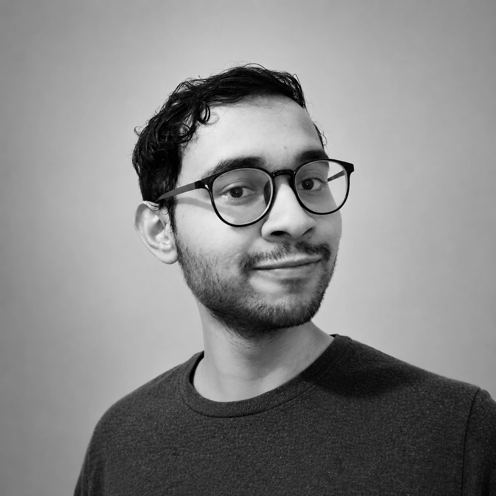
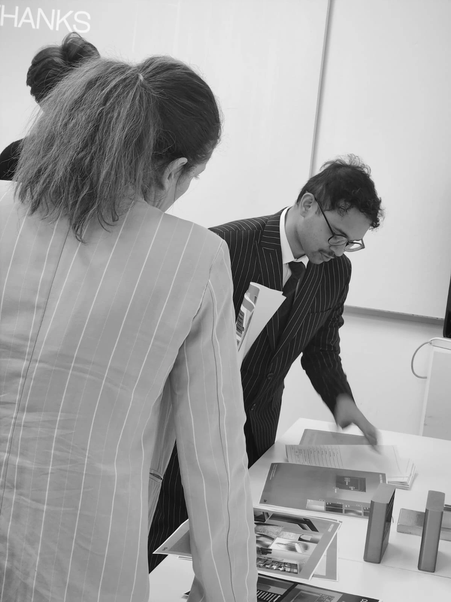
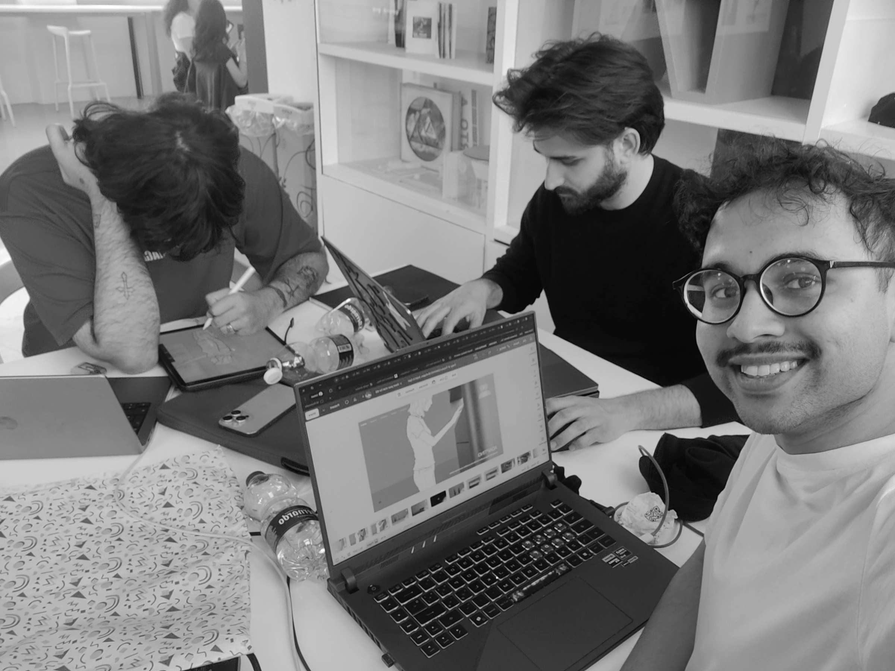
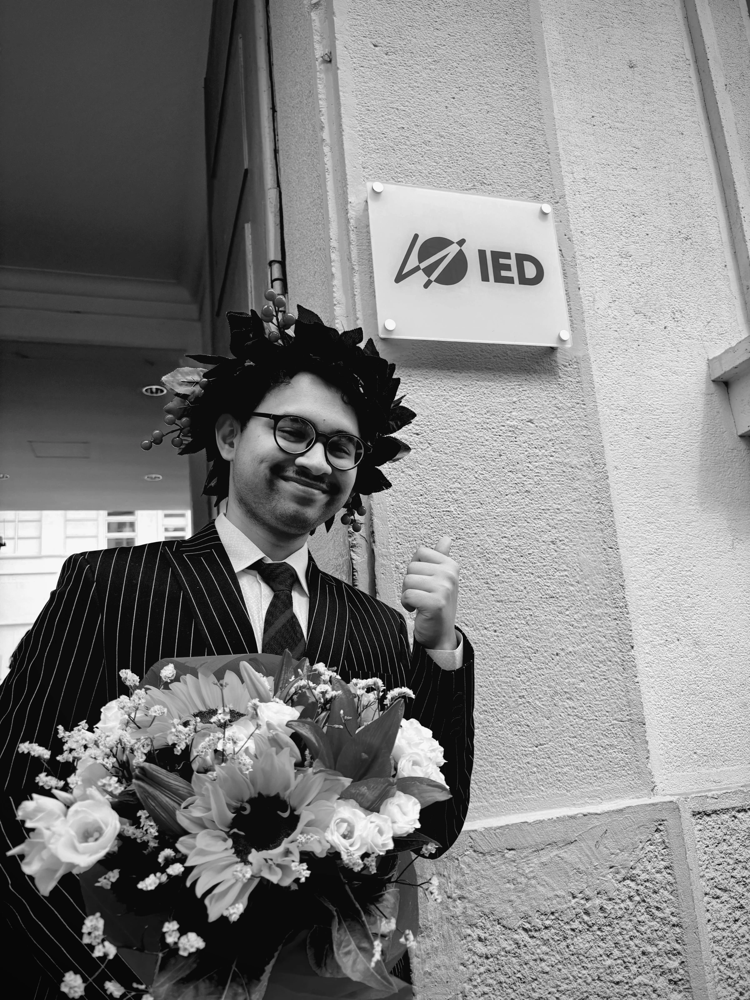
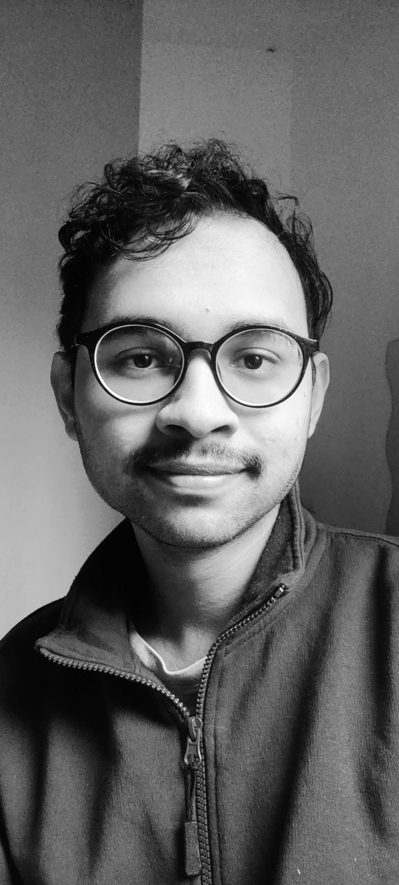

Human Ritual
Every project begins with behaviour, memory or a relationship worth supporting.
Product & Furniture Designer · Milan

I work across furniture, lighting and domestic systems, connecting emotional experience with material clarity and production reality.
Scroll to meet me ↓I am Sajid Shahtab Matin, a Product Design graduate from IED Milano. My work begins with a human question: how can an object support the moments that give everyday life meaning?
Rather than designing products as isolated forms, I explore the relationships around them—cooking together, gathering around light, slowing down at home. Research, cultural observation, prototyping and manufacturing development allow each idea to move from emotion toward something tangible.


How I work
Every project begins with behaviour, memory or a relationship worth supporting.
Materials, assembly and manufacturing are part of the concept—not an afterthought.
Objects shape atmosphere through proportion, restraint and quiet material presence.
Profile / CV

Milan, still becoming
I am building a multidisciplinary practice that can move between products, furniture, lighting and spatial experience—while staying grounded in the rituals of living and the realities of making.
